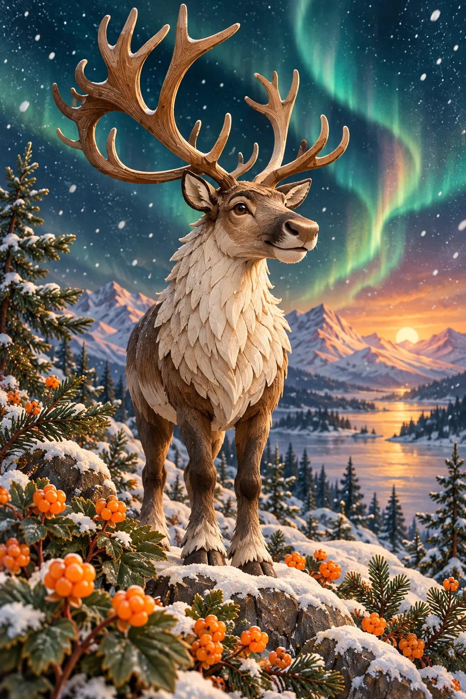

КАРТОЧКА ПРЕДПРИЯТИЯ № 13
◆
Нефтяная
качалка
ПОКУПКА320 ₽
АРЕНДА70 ₽
ДОХОД ЗА КРУГ80 ₽
УЛУЧШЕНИЕ160 ₽
Промышленный актив · Муравленко
Стройте свой город на настоящем 3D-поле: покупайте предприятия, запускайте нефтяную качалку и выигрывайте рубли. Всё — прямо в браузере.
01 / ИГРОВОЕ ПОЛЕ
Настоящая объёмная сцена. Поверните поле мышью или пальцем, приблизьте колесом и нажмите на клетку.
3D-поле создано из игровых миниатюр. Ваши фишки действительно перемещаются по маршруту.
1 500 ₽ на старте, зарплата и аренда
Предприятия, улучшения и нефтедобыча
Карточки событий и северный джекпот
02 / КОМПЛЕКТ ИГРЫ
Каждый актив имеет цену, аренду и два уровня улучшений. Банк выдаёт игровые рубли; события меняют баланс партии.
Промышленный актив · Муравленко
Скидка 10% на три покупки или улучшения предприятий категорий «отдых», «культура» и «сервис».
ВЫМЫШЛЕННОЕ ПРАВИЛО ИГРЫ · НЕ РЕАЛЬНАЯ ЛЬГОТАОСОБОЕ СОБЫТИЕ
На поле спрятаны две золотые клетки. Они приносят случайный денежный приз: 100, 150 или 200 ₽.
Испытать удачу ↗
03 / ПРАВИЛА
У каждого игрока 1 500 ₽. Через восемь раундов побеждает самый богатый по сумме наличных, цены активов и улучшений.
Пройдите сумму выпавших очков. За полный круг банк платит 200 ₽.
Свободный актив можно купить. Соперник платит аренду владельцу.
До двух улучшений повышают аренду. Нефтяная качалка приносит ещё 80 ₽ за круг.
Если не хватает денег на обязательный платёж, игрок выбывает. Остальные считают капитал.
Правила и суммы — вымышленные игровые величины. «Карта Морошка» не является государственной или городской льготой. Реальные северные гарантии зависят от закона, стажа, территории и условий работы.
03 / ВДОХНОВЛЕНО МУРАВЛЕНКО
Маршрут вдохновлён Муравленко: Парковым бульваром, эколого-краеведческим музеем и историей освоения нефтяных месторождений. Морошковые поляны, олени и джекпот — сказочные игровые события.